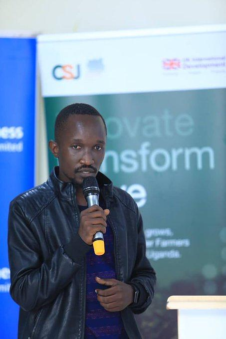

Bayo Herbert
Hi there! I'm Bayo Herbert, a dedicated and passionate software engineer with over 5 years of experience in building dynamic and scalable web applications. My journey in the tech world began at a young age, fueled by an insatiable curiosity for how things work and a love for solving complex problems.
I grew up in a small town where access to technology was limited, but that didn't deter my enthusiasm. I started learning to code in high school, teaching myself the basics of HTML, CSS, and JavaScript through online resources and books. This early passion for technology set the foundation for my future career.
Education.
I pursued a Bachelor's degree in Computer Science at XYZ University, where I graduated with honors. During my time at university, I gained a solid understanding of computer science principles, data structures, algorithms, and software engineering practices. I was actively involved in several coding clubs and participated in numerous hackathons, which helped me hone my skills and collaborate with other like-minded individuals.
Experience
Upon graduation, I joined ABC Technologies as a Junior Developer, where I worked on a variety of projects ranging from small websites to large-scale enterprise applications. Over the years, I progressed to a Senior Developer role, taking on more responsibilities and leading a team of talented developers. Currently, I work at DEF Solutions, where I focus on developing innovative solutions that drive business growth. My expertise lies in full-stack development, with a strong emphasis on front-end technologies like React and Angular, as well as back-end frameworks such as Node.js and Django. I am also proficient in cloud services like AWS and Azure, ensuring that the applications I build are not only functional but also highly scalable and reliable. Throughout my career, I have always been committed to continuous learning and improvement. I regularly attend industry conferences, contribute to open-source projects, and stay up-to-date with the latest trends and technologies in the software engineering field. I am passionate about leveraging technology to solve real-world problems and am always excited to take on new challenges. Whether it's developing a new feature, optimizing performance, or mentoring junior developers, I approach every task with enthusiasm and a drive for excellence.
Skills
JavaScript: Expert in ES6+, proficient in writing clean and efficient code for web development. Python: Strong background in Python for both web development (Django, Flask) and data analysis. Java: Proficient in Java for building scalable backend systems and Android applications. C++: Solid understanding of C++ for system-level programming and performance-critical applications. SQL: Advanced knowledge of SQL for database design, querying, and optimization.
React: Extensive experience in building dynamic, responsive user interfaces. Angular: Proficient in developing single-page applications with Angular. Vue.js: Knowledgeable in using Vue.js for flexible and lightweight frontend development. Redux: Expertise in state management with Redux in React applications.
Backend
Node.js: Strong skills in server-side development with Node.js and Express. Django: Proficient in building robust web applications with Django. Flask: Experience in developing lightweight web applications with Flask. Spring Boot: Familiar with building enterprise-level applications with Spring Boot.
Databases
Relational Databases: MySQL: Advanced skills in designing and managing MySQL databases. PostgreSQL: Proficient in using PostgreSQL for complex queries and data integrity. NoSQL Databases: MongoDB: Experience in working with MongoDB for flexible and scalable data storage. Redis: Knowledgeable in using Redis for caching and real-time data processing.
Tools & Technologies
Git: Expertise in version control with Git, including branching, merging, and collaborating on GitHub/GitLab